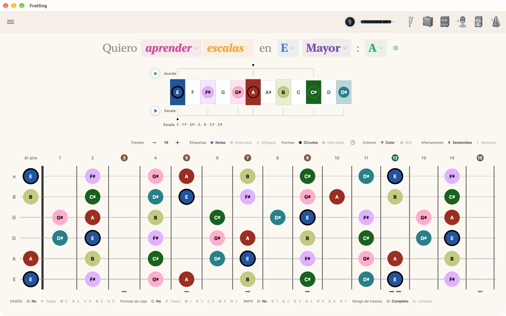
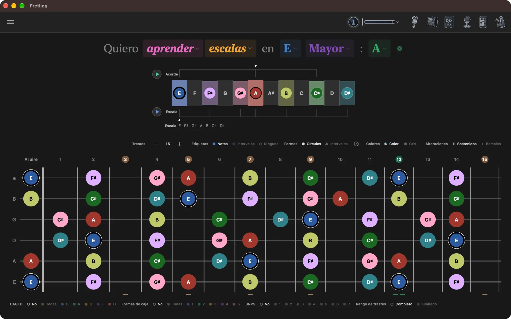
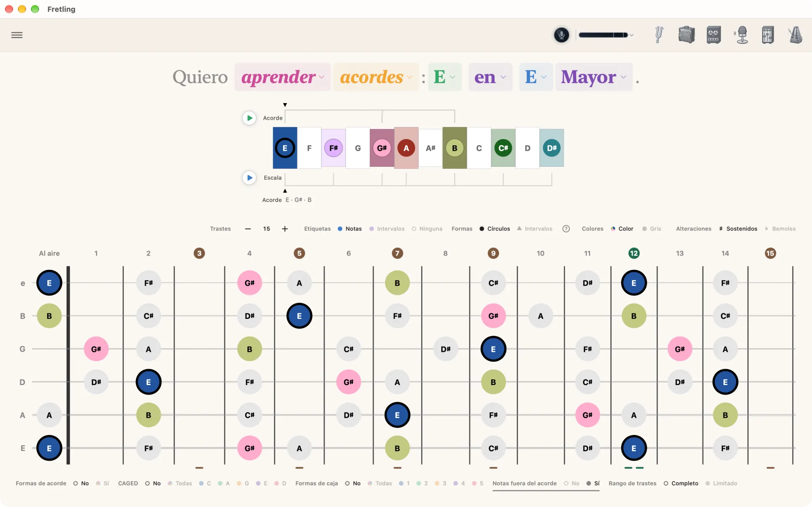
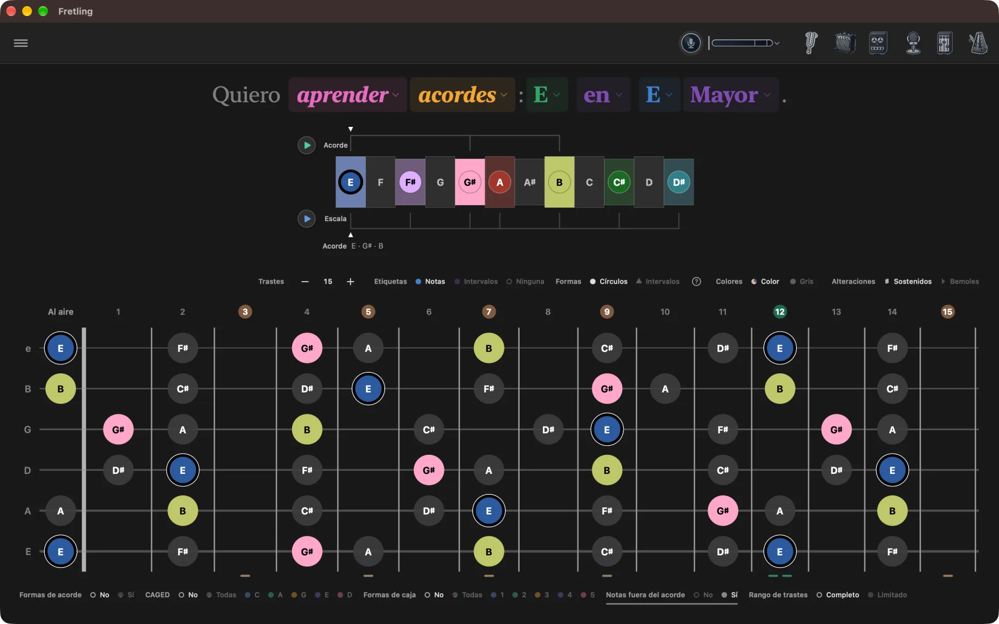
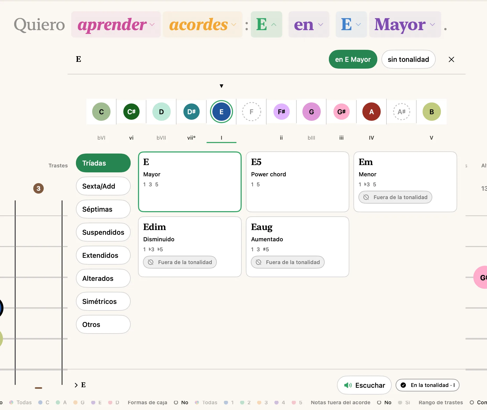
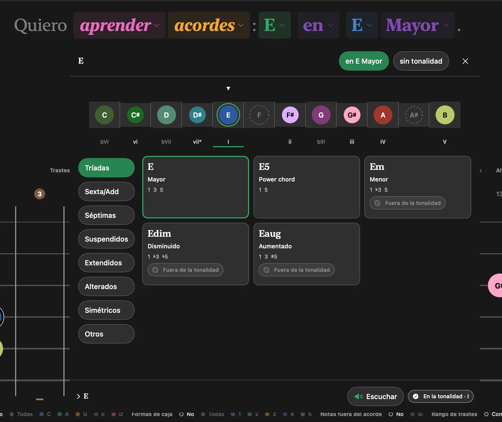
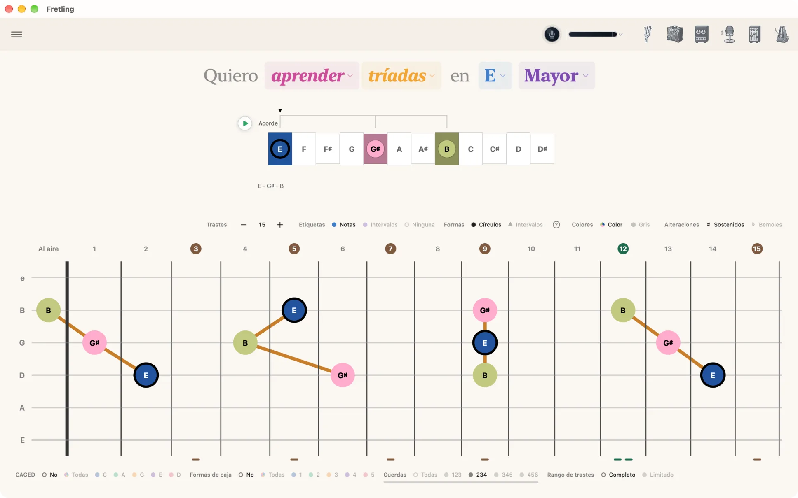
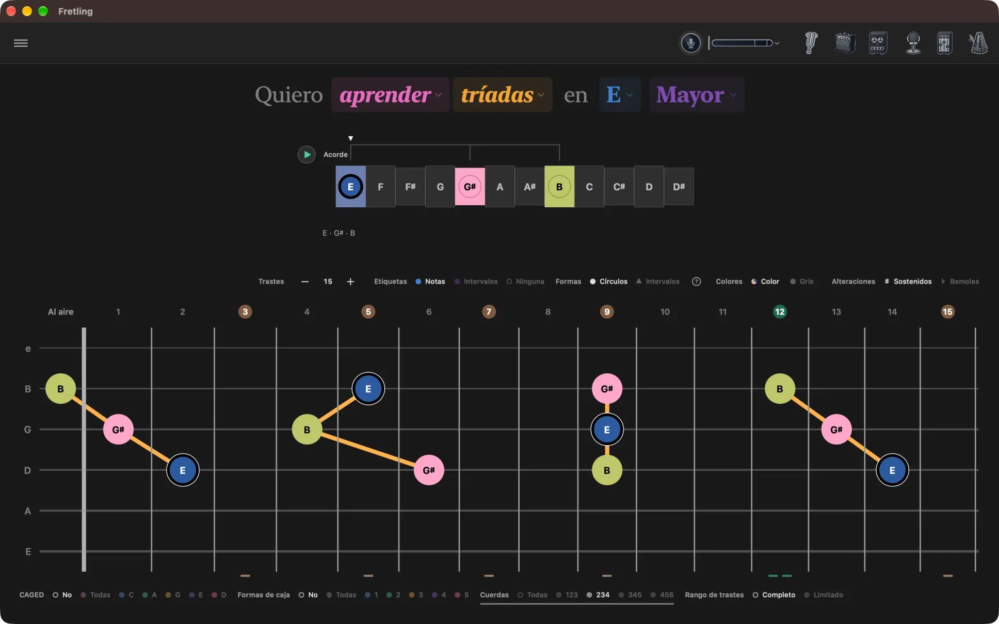
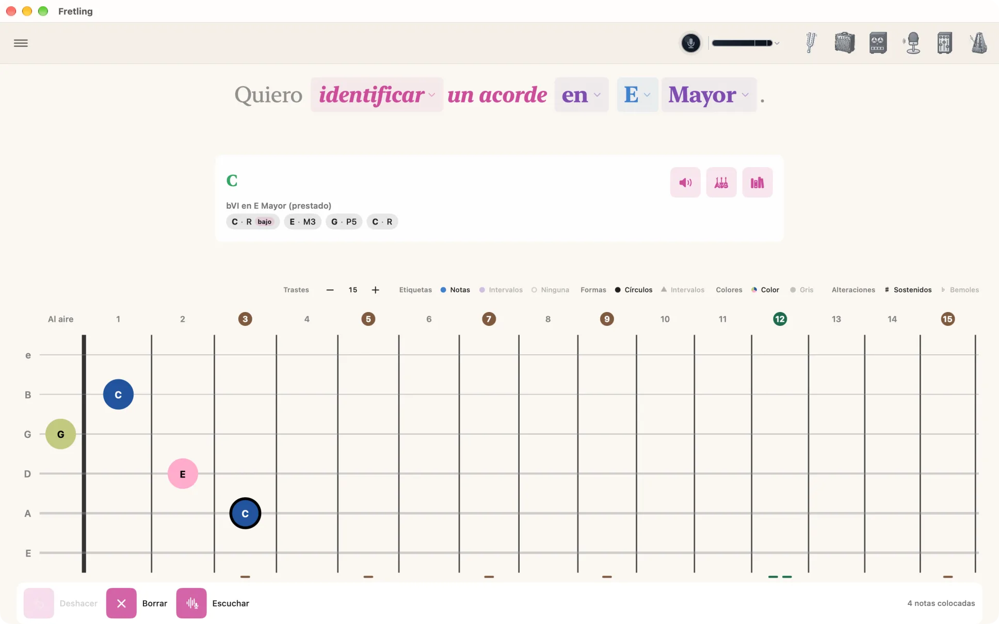
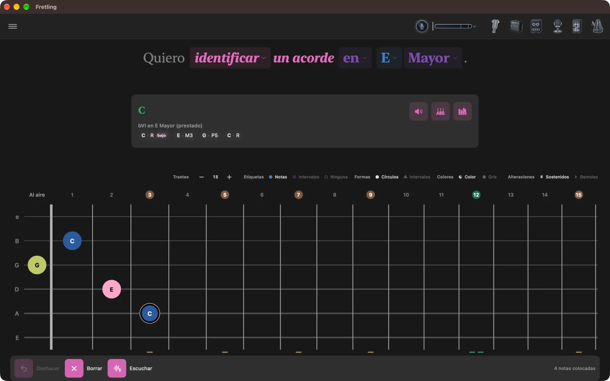

Modos de aprendizaje
Todo empieza desde una oración en la parte superior de la pantalla. Cada palabra coloreada es un menú desplegable; cambiar una reescribe lo que muestra el diapasón.
El encabezado de la oración
El encabezado se lee como prosa común y cada palabra resaltada abre un selector:
Quiero aprender escalas en E Mayor.
| Palabra | Opciones |
|---|---|
| aprender / identificar | El verbo decide para qué sirve la app en este momento: mostrarte algo (aprender) o nombrar algo que tocas (identificar). Cambiar a identificar deja tu modo de aprender y su acorde donde estaban, así que al volver los encuentras igual. La tonalidad es compartida: cámbiala en identificar y aprender la sigue. |
| Modo | Escalas, Acordes, Tríadas. |
| Nota raíz | Las doce notas, escritas como se escribe la tonalidad (F mayor dice B♭, no A♯), hasta que eliges Sostenidos o Bemoles en la barra de visualización de marcadores; desde entonces manda tu elección en todas las tonalidades. |
| Tipo de escala | Mayor, menor, pentatónica mayor y pentatónica menor encabezan la lista; las demás siguen bajo el encabezado Más escalas: Blues, que es gratis, y luego Dórico, Mixolidio, Frigio, Lidio, Locrio, Menor armónica y Menor melódica, que requieren Pro y muestran un candado. En identificar es una sola lista, sin encabezado. |
| Acorde | En el modo Acordes, y opcionalmente en el modo Escalas, un selector de acordes respaldado por el Atlas de acordes. |
| Tipo de tríada | En el modo Tríadas, en lugar de la escala: Mayor, Menor, Aumentada, Disminuida. Nombra una sola tríada sobre la fundamental, no una tonalidad. |
En una ventana ancha la oración se lee en una sola línea y se desplaza de lado si es más larga que la ventana. En una ventana angosta del iPad pasa a una segunda línea, o a una tercera, como cualquier texto. En una ventana baja, donde el mástil necesita el espacio, se pliega en un resumen en la barra superior (solo su tema, como E Mayor) y al tocar el resumen se abre la oración completa, con todos los menús desplegables activos. En la Mac el encabezado siempre ocupa una sola línea.
Escalas
Propósito: aprender una escala a lo largo de todo el mástil en cualquier tonalidad.
Qué eliges: una nota raíz y un tipo de escala: doce escalas en total, que cubren las escalas mayor y menor, ambas pentatónicas, la escala de blues, cinco modos y las menores armónica y melódica.
Gratis o Pro: Mayor, Menor, ambas pentatónicas y Blues son gratis. Los cinco modos, la menor armónica y la menor melódica son Pro.
En el diapasón: cada nota de la escala está marcada. La línea de tiempo de la escala sobre el mástil dispone los doce semitonos en fila para que veas la forma de la tonalidad misma. Debajo del mástil, Agrupaciones visuales te dejan superponer formas CAGED, las cinco cajas de posición de la escala y patrones de tres notas por cuerda, de uno en uno o todos juntos.
Añadir un acorde: El modo Escalas tiene un espacio opcional para un acorde al final de la oración, que dice un acorde hasta que lo llenas: “Quiero aprender escalas en E Mayor: un acorde.” Tócalo para elegir un acorde del Atlas de acordes y se convierte en el contexto de la tonalidad: la línea de tiempo de la escala gana un riel de acorde y un transporte Acorde, y el Atlas lo sigue. Deja el diapasón en paz a propósito: en el modo Escalas la escala es el sujeto, y una nota del acorde dibujada más fuerte que sus vecinas responde a una pregunta que no hiciste. Bórralo con la ✕ junto al acorde, o con Quitar acorde en el Atlas, para volver a la escala sola. Cambiar la fundamental de la tonalidad o la escala también lo quita, y no se guarda al salir. Para ver las notas de un acorde marcadas en el mástil, cambia al modo Acordes.
Úsalo para: aprender una tonalidad a fondo y luego activar Formas de caja o CAGED para ver cómo encajan en ella los patrones que ya conoces.


Acordes
Propósito: explorar los acordes de una tonalidad y ver dónde se ubica cada uno en el mástil.
Qué eliges: un acorde, y la tonalidad contra la que se lee. La oración pone el acorde primero: “Quiero aprender acordes: Am en C Mayor”; el nombre del acorde es el botón que abre el Atlas de acordes, un catálogo de 57 tipos de acorde sobre las doce fundamentales. Cambiar la tonalidad nunca cambia el acorde: un Am sigue siendo un Am, leído contra la nueva tonalidad.
En una tonalidad, o sin ninguna: la palabra en es en sí misma un menú, con las dos mismas opciones que tiene identificar. Elige sin tonalidad y la tonalidad se quita: la escala sale de la oración y los colores de los intervalos se anclan de nuevo en la fundamental del propio acorde, así que ves el acorde medido desde sí mismo y no desde una tonalidad a la que quizá no pertenece. Sigue siendo un menú desplegable en ambos estados, así que la tonalidad vuelve desde el mismo lugar por donde salió. Es la misma elección que usan identificar y tocar, y Fretling la recuerda.
Armonía prestada: en una tonalidad mayor o menor, el Atlas nombra lo que toma prestado un acorde de fuera de la tonalidad. Una dominante secundaria con séptima se lee Prestado · V/V (D7 en C Mayor; una tríada de D sola se lee Fuera de la tonalidad), y un acorde tomado de la tonalidad paralela se lee Prestado · iv, como Fm en C Mayor. En las otras diez escalas un acorde está en la tonalidad o fuera de ella. No hay nada que activar.
En el diapasón: cada nota del acorde se marca a lo largo del mástil, con su fundamental rodeada por un aro. Con tonalidad, los colores y las etiquetas de intervalo se miden desde la fundamental de la tonalidad, como en la línea de tiempo (en C Mayor, la A de un Am se lee como 6.ª), y la fundamental de la tonalidad queda en el mástil en gris, con su aro, aunque no esté en el acorde. Pon Notas fuera del acorde en Sí en la barra de chips bajo el mástil para mantener visible el resto de la escala debajo, en gris, y así ver el acorde dentro de su tonalidad. Las notas no diatónicas del acorde siempre se dibujan, haga lo que haga el filtro de la escala.
Formas de acorde: con los chips Formas de acorde bajo el mástil puestos en Sí (el valor predeterminado), se dibujan en el mástil digitaciones reales del acorde, opcionalmente con números de dedos. Mientras están activas, el mástil muestra solo las notas de las formas encendidas en su leyenda; toca Todas ahí para ver todas las notas del acorde. Ver Formas de acorde.
Úsalo para: ver cómo se relacionan entre sí los acordes de una tonalidad y qué agarre CAGED es cada acorde mayor o menor.


El Atlas de acordes
El Atlas es el catálogo de acordes de Fretling, y es gratis en todos los modos. Ábrelo tocando el acorde en la oración: el nombre del acorde en el modo Acordes, o el espacio para un acorde al final de la oración de Escalas. En la Mac se abre como un panel bajo el acorde; en el iPad, como una hoja.
Cómo está dispuesto: arriba, el nombre del acorde y dos botones de tonalidad, en C Mayor y sin tonalidad, que cambian la misma elección que el en de la oración. Debajo, las doce fundamentales, dispuestas como un teclado. Luego los tipos de acorde en ocho familias: Tríadas, Sexta/Add, Séptimas, Suspendidos, Extendidos, Alterados, Simétricos y Otros; cada tarjeta muestra el nombre del acorde, su tipo y su fórmula (1 ♭3 5 ♭7). Abajo hay una bandeja que empieza plegada: el acorde, Escuchar y dónde queda el acorde en la tonalidad (En la tonalidad · vi). Despliégala con la flecha junto al nombre para ver Añadir, Alterar y Omitir (add9, ♭5, no3; un chip que no cambiaría el acorde aparece atenuado) y Barra, una nota de bajo debajo del acorde (C/E).
Cada elección es inmediata: cada toque se aplica al momento. El mástil y la oración lo siguen, el acorde suena y el Atlas se queda abierto, así que puedes recorrer acordes de oído sin cerrar la hoja y reabrirla cada vez. Las elecciones de fundamental, tarjeta, modificador y bajo suenan todas. Tocar una familia la abre sin sonido y, si tu acorde no está en ella, elige su primer tipo. Escuchar vuelve a reproducir el acorde actual.
Conoce tu tonalidad. Con tonalidad, cada fundamental lleva en un riel debajo el número romano de su acorde en la tonalidad (las fundamentales de la tonalidad, sólidas; las prestadas, más claras; el resto, contornos punteados), y los acordes que la tonalidad tiene o toma prestados se ordenan primero en cada familia. Una tarjeta lo indica cuando difiere de su fundamental: Fuera de la tonalidad, Prestado · V/V. En una tonalidad mayor o menor, una dominante secundaria con séptima se lee Prestado · V/V y un acorde tomado de la tonalidad paralela se lee Prestado · iv; en las demás escalas un acorde está en la tonalidad o fuera de ella. No hay que activar nada, y nada de esto está detrás del desbloqueo Pro.
Acordes sin formas. Once tipos no tienen digitaciones en la biblioteca de acordes: 7sus2, maj7sus4, 9sus2, 9sus4, m13, 7♭13, tonos enteros, escala disminuida, cuartal, quintal y dimMaj7. Mientras Formas de acorde está activado, el Atlas los deja fuera; desactívalo y aparecen los 57 tipos, esos once marcados Sin formas.
Desde el teclado: ← y → avanzan por una fila, ↑ y ↓ saltan entre las fundamentales, las familias, las tarjetas y la bandeja, Retorno elige y Esc cierra.
Sigue a la barra de visualización de marcadores. Etiquetas, Colores y Alteraciones llegan al Atlas igual que llegan al mástil, así que un acorde deletreado con bemoles en el diapasón se deletrea con bemoles aquí. La única diferencia deliberada: con Etiquetas en Ninguna el Atlas conserva los nombres de los acordes, porque un catálogo sin nombres no es un catálogo.


Tríadas
Propósito: practicar voicings de tres notas en conjuntos específicos de cuerdas.
Qué eliges: una nota raíz y un tipo de tríada: Mayor, Menor, Aumentada o Disminuida. La oración dice “Quiero aprender tríadas en C Mayor”, pero la última palabra es el tipo de tríada, no una tonalidad: significa la tríada de C mayor (C, E y G) y nada más, así que no se dibuja ninguna escala. Fretling recuerda el tipo de tríada aparte de la escala, así que al llegar desde escalas en A Menor puede decir tríadas en A Mayor hasta que elijas Menor aquí. La fundamental es la que comparten todos los modos: cambiarla aquí la cambia también en Escalas y Acordes.
En el diapasón: cada nota de la tríada se marca a lo largo de todo el mástil, con su fundamental rodeada por un aro. El grupo Cuerdas bajo el mástil reduce la vista a un conjunto de tres cuerdas vecinas, numeradas desde la más delgada: 123 es G, B y e aguda; 234 es D, G y B; 345 es A, D y G; 456 es E grave, A y D. Empieza en Todas. En un conjunto de cuerdas las formas suben por el mástil en orden: posición fundamental, primera inversión, segunda inversión y otra vez posición fundamental una octava más arriba. Fretling las dibuja, pero no rotula cuál es cuál.
Líneas de tríada: con un conjunto de cuerdas elegido, activa Mostrar líneas de tríadas en Configuración → Diapasón y una línea une cada forma que una mano puede sostener. Las líneas necesitan un conjunto de cuerdas: con Cuerdas en Todas el interruptor no dibuja nada.
CAGED y Formas de caja funcionan aquí también, sobre la tríada. CAGED dibuja los agarres mayores para una tríada mayor y los menores para una menor; las tríadas aumentadas y disminuidas no tienen agarre CAGED, así que el grupo sale de la fila con ellas. Formas de caja dibuja las cinco cajas de la pentatónica mayor sobre tu fundamental para una tríada mayor o aumentada, y las de la pentatónica menor para una menor o disminuida; así que, para las aumentadas y disminuidas, las cajas tienen la 5.ª justa, no la de la tríada. Formas de caja es la selección que usa Escalas, y CAGED es una sola selección que comparten todos los modos: elige CAGED A aquí y Escalas, Acordes y Progresiones también muestran la forma de A.
Escucharla: la línea de tiempo sobre el mástil dispone las doce notas desde la fundamental de la tríada, con sus tres notas rellenas y unidas por el riel Acorde. Su transporte redondo Acorde sostiene la tríada hasta que lo vuelves a presionar: cerrada, en posición fundamental, en el pad de acordes, no la forma que estás mirando. Cambiar la fundamental o el tipo de tríada la detiene.
Úsalo para: aprender una tríada en un conjunto de cuerdas y luego mover la misma forma hacia arriba en el mástil y al siguiente conjunto.


Identificar un acorde
Propósito: la búsqueda inversa: tienes una forma bajo los dedos y quieres saber cómo se llama.
Elige identificar como verbo del encabezado y la oración se convierte en “Quiero identificar un acorde en C Mayor”. La palabra en es un menú desplegable: elige sin tonalidad y dice “… un acorde sin tonalidad”. Fretling recuerda la elección. La tonalidad es la misma que usa aprender, así que cambiarla aquí la cambia allá. Con tonalidad, la tarjeta añade una línea que dice qué es el acorde en esa tonalidad: vi en C Mayor, iv en C Mayor (prestado), Fuera de C Mayor. La tonalidad no cambia nada más: ni los nombres que sugiere Fretling, ni su orden, ni el mástil.
Darle las notas a Fretling
- Tócalas en el mástil. El mástil empieza vacío; la primera vez, un consejo encima dice Toca el mástil para colocar notas; toca de nuevo para quitarlas. Toca un traste para colocar una nota (Fretling la toca una vez) y tócalo de nuevo para quitarla. Cada cuerda lleva una nota, como en una mano que pisa, así que tocar otro traste en la misma cuerda mueve la nota ahí. Dos notas distintas bastan para una respuesta. Una barra de colocación bajo el mástil te da Deshacer, que retrocede un cambio a la vez, Borrar y un conteo de las notas colocadas.
- Tócalas. Pro Presiona Escuchar en la barra de colocación: abre Detección en vivo, eleva su panel para que el control Detener quede al alcance y la pone a escuchar. Toca el acorde. Cuando Detección en vivo lo nombra, el botón se convierte en Capturar lo que toqué: presiónalo y ese acorde se coloca en el mástil, en lugar de lo que hubieras puesto (Deshacer lo recupera). Lo que aparece es el acorde que Detección en vivo nombró, con el voicing de Fretling desde el bajo hacia arriba, no tu digitación; mueve notas después si tu forma era otra. Detección en vivo nombra tríadas, power chords, sus2 y sus4, sextas y las séptimas comunes; una 9.ª o un add9 sale como el más cercano de ellos, o no sale, así que coloca tú en el mástil los acordes más ricos. El mismo paso está en el propio panel de Detección en vivo como Enviar al diapasón. Sin Pro, el botón muestra la hoja de desbloqueo y el micrófono nunca se abre.
Leer los resultados
La tarjeta sobre el mástil responde en cuanto hay dos notas distintas colocadas. Da un nombre, grande: C, C/E, Am7, Cmaj7no5; y a su lado, cuando hay algo que explicar, el porqué: 1.ª inversión: E en el bajo, 5.ª (G) omitida: añade G para completar Cmaj7, C con un F♯ añadido. Debajo, tus notas de grave a aguda, cada una con su intervalo desde la fundamental del acorde, y la más grave marcada como bajo. En el mástil la nota más grave lleva un aro, porque el bajo a menudo decide el nombre.
Las mismas notas suelen ser más de un acorde. Cuando lo son, una fila Lecturas enumera los otros nombres, hasta cinco en total, el mejor primero. Tras una coincidencia completa solo enumera otros nombres completos: A, C, E y G sobre un A se leen Am7, luego C6/A. Cuando la mejor respuesta es ella misma una casi coincidencia, o solo hay dos notas colocadas, las casi coincidencias se suman a la lista: Ano3, Asus2. Toca una lectura y la tarjeta y los colores del mástil la siguen, con una línea que dice por qué queda más abajo: Las mismas notas que Am7: A en el bajo favorece Am7.
Desde una lectura puedes:
- Escúchalo: reproduce ese acorde en tu instrumento de Reproducción: el voicing propio de Fretling para ese nombre, no las notas que colocaste.
- Mostrar voicings: dibuja en el mástil hasta tres digitaciones tocables para ese nombre.
- Abrir en el Atlas de acordes: sale de identificar al modo Acordes de aprender, con esta lectura como acorde. El Atlas en sí queda cerrado; toca el acorde en la oración para abrirlo.
Tus notas colocadas se quedan donde están si cambias a aprender y vuelves, y se borran al salir.

